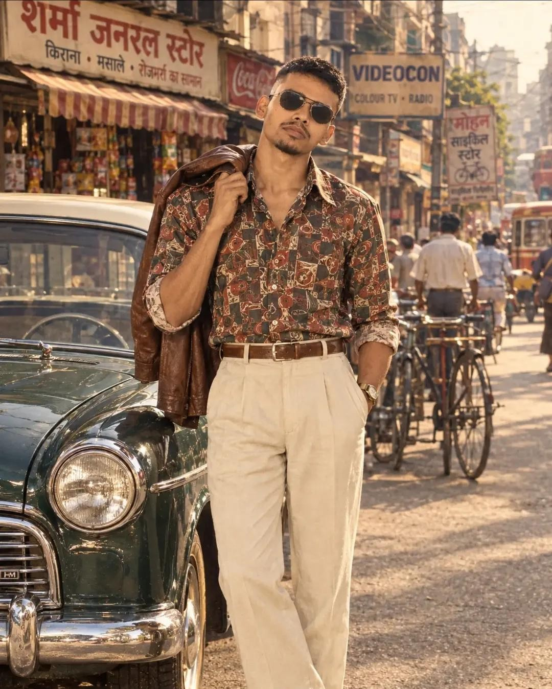

Some days call for a little style.
No special occasion needed. Sometimes you just like the fit, the light, and how the photo turned out.
A SMALL ARCHIVE OF ORDINARY DAYS
made for you, bhaiya ✳
No big introduction.
Just a few moments that feel like me.
Simple days, good people, new places and memories worth keeping.

same person
different days ↘
01 THE PERSON BEHIND THE PHOTOS
not a formal bio
This little website is a collection of photos, small details and everyday moments. No long bio and no made-up story — just Sandeep, as he is.
Some days are about going somewhere new. Some are just about showing up, taking a photo and keeping the memory.
with love,
your little brother ✳
02 SCROLL THROUGH THE MOMENTS
one photo at a time
Keep scrolling. The photo changes with the story — no rushing, just a few frames at a time.
kept for the memories ↗
No special occasion needed. Sometimes you just like the fit, the light, and how the photo turned out.
A familiar place, a quiet moment, and a photo that feels like the day actually did.
Different surroundings, different energy. The small details often make the best memories.
Some photos are worth keeping simply because they happened — and that's enough.
03 THE LITTLE THINGS
things worth keeping
Not a list of achievements.
Just a few things worth exploring.
Keeping a moment before it becomes a memory.
A different road, a different view.
Finding a look that feels like you.
good photos, new places, a little style ✳
04 A FEW FRAMES FROM THE ROLL
tap to look closer
Five frames. No particular order.
that's all for now ✳
05 LET'S STAY CONNECTED
If you know me, you know where to find me.
Find me on Instagram ↗@sandip_kumar___02